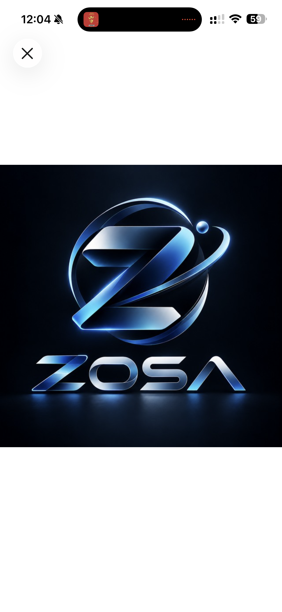

Inteligencia artificial útil
Asistentes con contexto, voz, visión y memoria para orientar conversaciones y convertir información en decisiones.
✦
TECNOLOGÍA QUE SE VUELVE OPERACIÓN
ZOSA convierte retos reales de negocio en experiencias digitales, automatizaciones e inteligencia artificial que las personas pueden usar y entender.
Desde Popayán, Colombia. Para organizaciones que no quieren quedarse quietas.

ZOSA EN UNA FRASE
No se trata de sumar tecnología. Se trata de hacer que una organización pueda decidir, atender y avanzar con mayor claridad.
NUESTRO ENFOQUE
No partimos de una herramienta de moda. Partimos de una conversación: qué está frenando al equipo, dónde se pierde el contexto y qué cambio haría una diferencia real.
Cuéntanos qué quieres resolver →CAPACIDADES
Combinamos estrategia, ingeniería y diseño para llevar una idea desde el primer mapa hasta una experiencia que ya puede operar.
Asistentes con contexto, voz, visión y memoria para orientar conversaciones y convertir información en decisiones.
Procesos que unen formularios, documentos, bases de datos, mensajería y equipos sin perder trazabilidad.
Webs, plataformas y herramientas claras que presentan una propuesta, facilitan una tarea y abren una relación.
Visión por computador, datos, robótica e integración de sistemas cuando el reto requiere precisión técnica.
TRABAJO EN MOVIMIENTO
Estos proyectos muestran áreas donde ZOSA ha puesto tecnología al servicio de personas, equipos y organizaciones.
01
Un asistente por voz y texto para organizar información, trabajar con documentos y llevar tareas desde la conversación hasta la acción.
02
Un proyecto de prevención de fraude orientado a revisar comprobantes de transferencias y reducir decisiones con información falsa.
03
Una propuesta de empleado virtual que combina conversación por voz y WhatsApp para acompañar atención, agenda y contexto comercial.
04
Una experiencia turística para descubrir lugares, patrimonio, gastronomía y rutas del Cauca con información útil para planear y recorrer.
FORMA DE TRABAJAR
Escuchamos el proceso real, a las personas y el resultado que vale la pena mejorar.
La tecnología se define por su utilidad, no por tendencia. Cada parte debe tener una razón clara.
Convertimos el diseño en una experiencia verificable, con espacio para aprender y mejorar.
PRINCIPIO ZOSA
Trabajamos con empresas, emprendedores e iniciativas que quieren transformar una buena idea en algo concreto para sus clientes, equipos o comunidades.
HABLEMOS
Cuéntanos qué estás intentando resolver. Una primera conversación puede revelar por dónde empezar.
Escribir a ZOSA ↗angelgarzonsarzosa@gmail.com